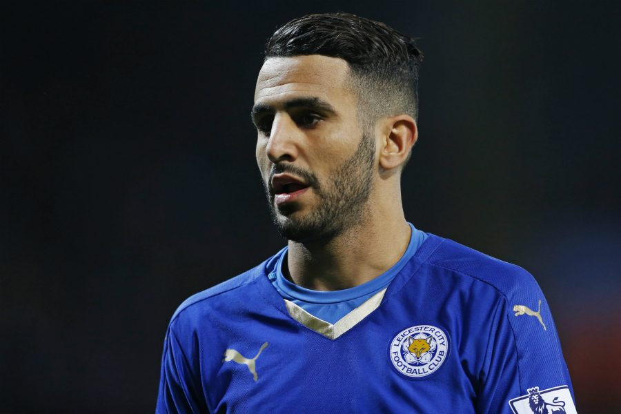

Bienvenue sur la page de Riyad Mahrez

Valeur actuelle: 40M d'€
Biographie
Riyad Mahrez , né le 21 février 1991 à Sarcelles en France, est un footballeur international algérien évoluant en Premier League au poste d'ailier droit à Manchester City. Mahrez a commencé sa carrière en tant que jeune joueur pour le club français AAS Sarcelles. Mahrez a fait ses débuts internationaux pour l'Algérie en 2014 et l'a représentée à la Coupe du monde de football 2014 et à la Coupe d'Afrique des nations 2015, 2017, 2019 et 2021, remportant la Coupe d'Afrique des nations en 20191. En 2016, il a été nommé footballeur africain de l'année
Carrière en club
2011-2014 Le Havre
2014-2018 Leicester City
Depuis 2018 Manchester City
En nationale
Le 17 juin 2014, il dispute son premier match de coupe du monde, face à la Belgique, en tant que titulaire pour une défaite 2 à 1, dans le cadre de la première journée du groupe H, au stade de l'Estádio Mineirão à Belo Horizonte. Après des critiques concernant le jeu de l’Algérie, que ce soit par les supporters ou les médias, pour les matchs suivants du mondial 2014, Vahid Halilhodžić décide de le mettre sur le banc au profit de Abdelmoumene Djabou pour avoir un style de jeu plus offensif, par exemple contre la Corée du Sud avec un résultat payant puisque l’Algérie gagne 4-21. Avant le troisième et dernier match du groupe, il dira : « aborder le dernier match avec plus de sérénité et moins de pression. Sincèrement, si on ne joue pas n’importe comment, on passera en huitièmes. Je pense que nous avons le potentiel pour réaliser cet exploit. Il ne faut surtout pas chercher à jouer le nul, c’est la plus grosse erreur que l’on puisse commettre. Elle risque de nous être fatale ». Il est aussi sur le banc durant le match décisif contre la Russie pour la qualification du second tour, où d'ailleurs les Fennecs et lui réalisent l'exploit de passer le premier tour. Pour le dernier match contre l'Allemagne (future champion du monde 2014), en huitième de finale, il est sur le banc et assiste à l'élimination de lui et ces siens et la fin de l'aventure de 2014
Compilation Des meilleurs Buts de Riyad Mahrez (baisser ou couper le son)
vidéos